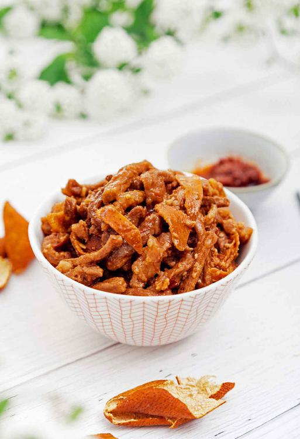
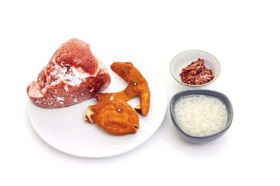
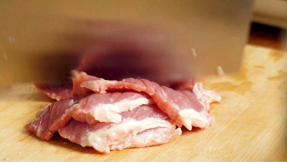
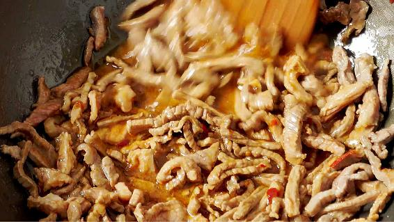
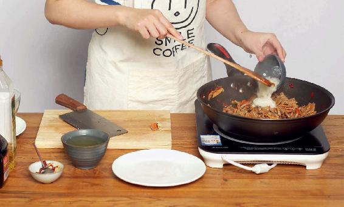

要预防亚健康，从春天开始就要做好功课。第一步是“清”，可以喝醒神茶，让自己的身体变得清明，让自己神清气爽。第二步是“补”。
这个次序不能颠倒。我们必须先清除身体内多余的病气、垃圾，才可以进补。次序反过来，就容易把病气和垃圾封存在体内。
做好了“清”的工作，接下来就要做“补”的工作。给身体补一补，提升气血和能量，这样才能让我们精力充沛，不会轻易地感到疲倦。
我曾经说过，春天要吃甘味的食物，而在肉类中，牛肉是甘味的。在春天，我们可以多吃一些牛肉，打一个比方，牛肉就好比是肉类中的黄芪，可以补气健脾。
在春天，有很多朋友不能吃黄芪，因为吃了黄芪容易上火，这时候我们可以通过吃牛肉来补气健脾。
牛肉在肉类中是最补气的，它补的是脾的精气。牛肉补脾的作用很好，小朋友在春天也可以多吃一些牛肉，这样有助于夏天的时候长个子。
牛肉跟黄芪一样，也有一个小问题，就是脾胃虚弱的朋友吃多了，会感觉有点胀气，不好消化。这时，可以用陈皮来跟它搭配。
搭配陈皮有两个好处：第一，可以理气，防止吃完牛肉后胀气；第二，陈皮是同补药则补，同泄药则泄。它跟牛肉搭配在一起，可以增强牛肉补益身体的作用，特别是增强牛肉补脾的作用。
陈皮牛肉适合什么样的人吃呢？脾虚的人。
气血不足，或者贫血，或者血虚，或者体质虚寒，或者甲状腺功能减退的朋友，都可以吃陈皮牛肉。
还有一些患有慢性病的人，比如下面这几种人：
第一，患有糖尿病，特别是糖尿病患病时间长，人已经变得比较瘦弱，经常觉得乏力的朋友，这道菜补气的作用是很好的。
第二，患胆结石的朋友也可以经常吃这道菜来调理。这道菜没有直接化结石的作用，但它可以调虚证。长期胆有问题的人会有虚证，久病生虚，可以吃这道菜来好好补一补。
第三，经常觉得四肢酸软的老年人，或者很瘦，平时总觉得没力气的人，想变胖一点的人，都可以吃这道菜。如果您是比较胖的朋友，也完全不用担心吃这道菜会变得更胖。吃这道菜可能会让您长一点肌肉，但不会让您长肥肉。
普通体质的人在这个季节，包括到了初夏都可以吃这道菜，因为它有很好的保健作用。
牛肉补气的作用到底有多强呢？它甚至可以用来调理中气下陷。
有些朋友，特别是一些年纪比较大的女性朋友，她们的内脏普遍都会下垂，比如胃下垂、子宫下垂等。这种情况下，您都可以多吃这道菜来辅助调理。
其实，陈皮牛肉是一道著名的国宴菜，关于它的做法有很多版本。
下面这种做法是我母亲经常给我们做的一个家常版本，做法比较简单。
陈皮牛肉可以开胃、健脾、补肾
一般来说，做这道菜要选黄牛肉。黄牛肉是最常吃到的牛肉，它是温补的。

陈皮牛肉

原料：
黄牛肉250克，川陈皮1~2个，豆瓣酱，醪糟。（没有醪糟，也可以用料酒来代替，只不过要加一点点白糖和水来调和一下。）

微辣口味的做法：
1.把川陈皮用一点温水泡软，切成丝，牛肉也切成丝。

2.锅里放油，开大火，油烧热以后，牛肉丝下锅爆炒，炒到变色时放一勺豆瓣酱。

3.陈皮丝下锅，翻炒两下，再放入醪糟、酱油煮一会，待锅里的汤汁快要干的时候起锅就可以了。
中辣口味的做法：不放酱油，放三勺豆瓣酱。
特辣口味的做法：放五勺豆瓣酱。此外，在炒牛肉之前，先放几个干辣椒。
允斌叮嘱：
1.这道菜您可以稍微做得辣一点。因为辣味，特别是辣椒的味道，它是生阳气的，跟牛肉搭配相得益彰，不仅可以提气，还能帮助消化牛肉。吃辣的朋友，尽量把这道菜做成辣味的。
2.做菜的过程中，您还可以放一点蔬菜在里面。要放时鲜的蔬菜，最好是放点胡萝卜，因为胡萝卜也是健脾的。胡萝卜要切成滚刀块，炒完牛肉，加完醪糟和酱油之后，用中火跟牛肉一起煮。煮软后，用大火收干汤汁就可以了。
3.这道菜上桌之后，我建议您先闻一闻它的味道，是很辛辣鲜香的。闻一闻有打开脾胃功能的作用。闻完这个味道您再来吃，会觉得非常舒服。
这道菜对体质偏寒的人有好处，不仅可以健脾，也可以补肾。
另一个好处是它真的很开胃。小孩子吃了以后，可以多吃几碗饭。如果您给小朋友做的话，可以把这道菜里的豆瓣酱换成黄豆酱，这样他就不怕辣了。
希望您在用陈皮牛肉食方调理身体的同时，也能好好享受它的美味。